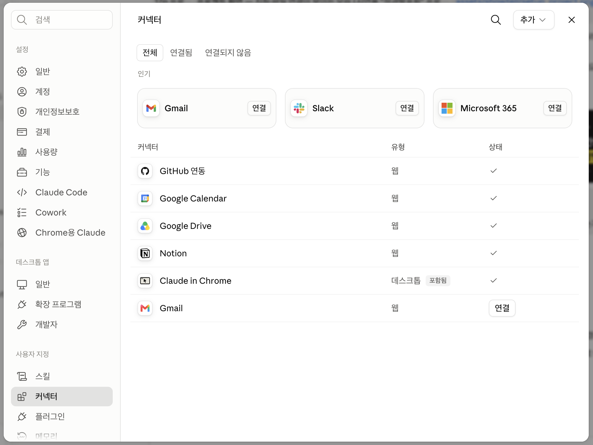
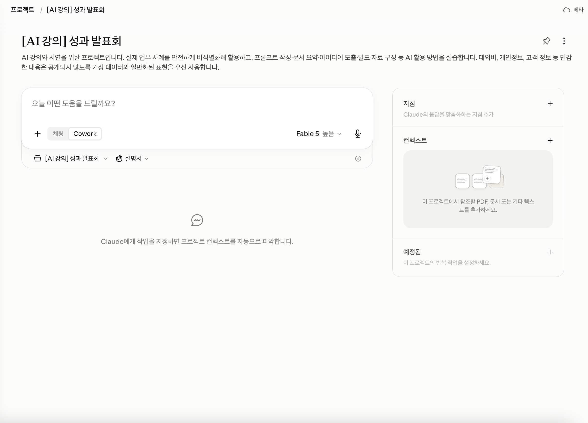
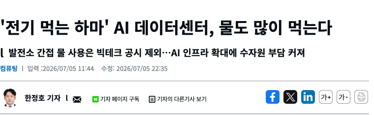
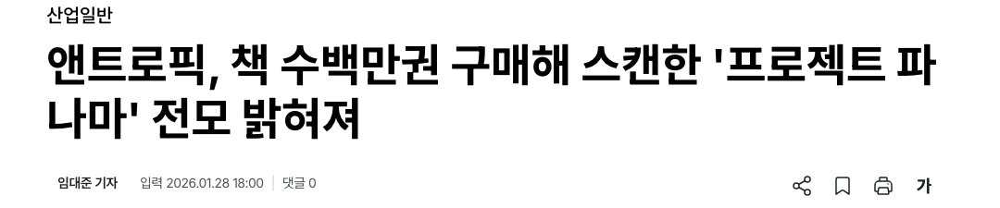
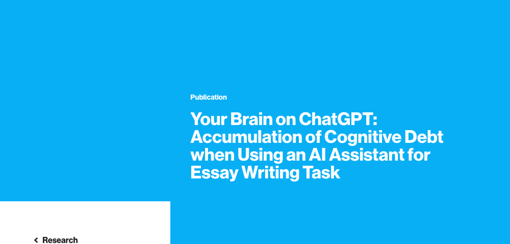

마인드셋 전환 + 실무 활용 + 잘 쓰기
업무 설계 + 직접 실습 + 임팩트 확장
박해주 · 카카오임팩트 에듀임팩트팀
전 플랜엠 임팩트 컨설턴트
영상 편집, 문서 작성, 일일 업무 관리 같은 개인 업무부터
Google Workspace와 AI를 연결해 팀과 함께 일하는 방식을 바꿔보는 것까지.
현장에서 직접 부딪혀가며 AX를 체화하고 있습니다.
전문가가 아니라 먼저 써본 사람으로서, 솔직하게 나누고 함께 고민하는 시간이 되었으면 합니다.
입력의 질이
출력의 질을 결정한다
검증과 책임은
사람의 몫이다
AI에겐 초안·정리·반복
나에겐 판단·맥락·방향
"뭘 시켰나 + 한 줄 소감" — 짧아도, 우당탕탕이어도 좋습니다
잘 된 패턴 vs 아쉬운 패턴, 같이 짚어봅시다
실수담, 고민, 잘 안 된 사례 모두 좋은 공유 소재예요 — 아주 작은 성공 경험도 환영!
일부 업무 이상에 적용 중
"업무 흐름에 자연스럽게" 28%
"일부 업무에 적용" 67%
쓰고는 있는데, 잘 쓰는 걸까?
"기본 기능만" 47%
"어느 정도 활용" 41%
답변 품질이 들쭉날쭉하다
어떤 AI를 써야 할지 29%
개인정보·보안 걱정 18%
그 갭을 오늘 메웁니다 — 프롬프트는 복습·심화로, 도구 고민은 지금 바로
요즘은 툴 하나가 많은 걸 해요 — "어떤 AI를 써야 하나"의 답은 더 많은 정보가 아니라 더 적은 분류입니다
제 회의록 업무가 변해온 과정입니다 — 노란 단계는 조수가, 흰 단계는 내가
개발자용 도구에서 출발했지만
지금은 일반 업무 도구
채팅하듯 요청하면
조수가 알아서 움직입니다
오늘 시연은 Claude Cowork (Pro 플랜)
ChatGPT Work·Codex는 무료 플랜도 체험 가능 (사용량 제한)
새로 배울 건 없어요 — 조수에게 출입증만 주면 됩니다

매번 처음부터 설명하지 않아도 되는 상태를 만드는 것

사례를 하나씩이 아니라, 실제 업무 하나를 프로세스별로 — 방금 세팅한 환경 위에서
🙋 습관 1 — 시작 전, 먼저 물어보기
"이거 어떻게 할 수 있어?" 방법부터 묻고, 모르는 건 "쉽게 설명해줘"
🔄 습관 2 — 진행 중, 확인하며 고쳐가기
한 번에 완성을 기대하지 않고, 중간 결과를 보며 대화로 조정
💡 함수를 외우는 게 아니라, 뭘 하고 싶은지 말로 설명하는 능력이면 충분
💡 좋은 레퍼런스를 함께 던져주면 출력 품질이 확 달라집니다 (1회차 복습!)
💡 커넥터·프로젝트를 연결해둔 덕분에 복붙이 사라집니다 — 조수가 자료를 직접 보고 씁니다
💡 "코드를 몰라도, 나도 할 수 있다" — 이 경험이 오늘의 목표
"성과발표회 준비를 시작할게. 프로젝트의 자료를 참고해서
① 기획 문서와 준비 체크리스트 시트 ② 홍보 포스터 시안
③ 참석자 안내 메일 초안 ④ 신청 폼 + 자동 발송 앱스크립트까지
순서대로 진행해줘."
잘 된 프롬프트와 레슨런을
모아두면 나만의 매뉴얼이 됩니다
프로젝트 지침에 반영해두면
다음 대화부터 자동 적용
자주 반복하는 업무는
레시피 카드처럼 저장
스킬 만들기, 어렵지 않아요 — 클로드에선 "지금까지 나랑 한 작업, 스킬로 만들어줘" 한 마디면 됩니다 (skill-creator)
그리고 이 자산을 팀에 나누면? — PART 3에서 이어집니다
맥락 + 요청 + 형태를 담아 실제 업무 하나를 시켜보세요
가이드 없이, "어떻게 해?"부터 AI에게 물어가며 직접 해보기 — 완성 못 해도 전혀 OK
끝나면 결과·소감을 채팅에 공유해주세요 — 우당탕탕이 오늘의 콘텐츠입니다
구글 워크스페이스처럼 팀이 접근 가능한 공유 기반 위에서 — 내 로컬에만 있으면 팀으로 확장될 수 없습니다
여기 있는 우리가 먼저 써보고 동료에게 나누기, 가르치며 성장하기 — 한 사람의 시행착오가 팀의 도구가 됩니다
조직 가이드라인 없음 56.2%, 물어볼 전문가 없음 70.2% — 개인의 시행착오에만 기대지 않도록
글로벌 비영리 AI 사용 88~92%, 그런데 AI 정책 보유는 10~24%
한국도 활동가 97%가 쓰지만 조직 56%는 가이드라인 없음
AI는 너무 빠르고, 조직 도입은 이제 막 — 예외가 아니라 대부분의 상황입니다
A4 한 장으로 시작 — 6가지만 정하면 돼요
① 적용 범위 ② 허용/금지 도구 ③ 데이터 입력 규칙
④ 인간 검토 원칙 ⑤ 투명성 규칙 ⑥ 담당자 지정
✅ 학습 데이터 제공 여부 확인
"내 입력이 AI 학습에 쓰이나?" — 옵트아웃 설정부터
✅ 개인정보 마스킹
"김OO" 대신 "참여자 A" — 연락처·주소는 지우거나 "010-XXXX"로
✅ 민감정보 입력 자제
기부자 금융정보 · 수혜자 상담기록 · 내부 전략 문서는 넣지 않기
✅ 조직 보안 정책 확인
없다면? — 이 체크리스트를 팀에 공유하는 것이 곧 시작
입력하기 전에 3초 — "이 내용이 외부에 공개되어도 괜찮은가?"


